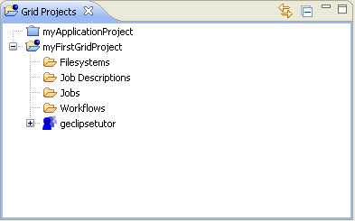
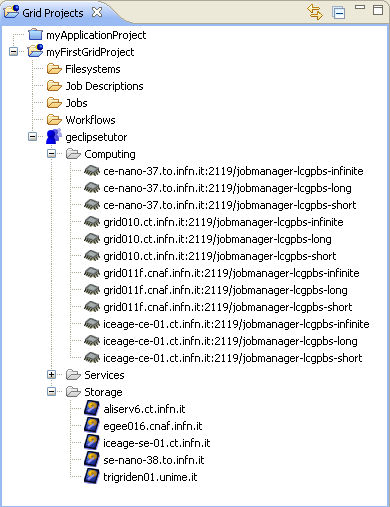

Different aspect of a Grid project are shown with the Grid Project View which is the main view in the different perspectives of g-Eclipse. The Grid Project View shows additional information of a Grid project which is related to remote Grid resources of the Virtual Organization and the management of them. After the creation of a Grid Project, the Grid Project View looks like:
With the help of the different folders, the users is able to manage Grid resources in a user friendly way. Additionally to this common folder structure, the Virtual Organization of the Grid Project is shown (In the picture this is the Virtual Organization named "geclipsetutor").
By clicking on the tree of the Virtual Organization, the user get a first overview of the available Grid computing and storage resources and of the available Grid services of the Virtual Organization.
The picture shows the distributed computing and storage resources located at different Grid sites.
The created standard folders are used to manage the Grid resources efficiently.